Transport system in India consists of transport by land, water, and air. Public transport remains the primary mode of transport for most Indian citizens, and India's public transport systems are among the most heavily used in the world.
Motor vehicle population in India is low as per international standards, with only 24.85 million cars on the nation's roads as per 2013 records. In total, about 21 percent of households have two wheelers whereas only 4.7 percent of households in India have cars/jeeps/vans as per the 2011 Census. Despite this, the number of deaths caused by traffic is amongst the highest in the world and increasing. The automobile industry in India is currently rapidly growing with an annual production of over 4.6 million vehicles, with an annual growth rate of 10.5% and vehicle volume is expected to rise greatly in the future.
India's rail network is the third-longest and the most heavily used system in the world, transporting 8.225 billion passengers and over 970 million tonnes of freight annually, as of 2015. The railways transport about 18 million citizens daily.
Human/Animal-Powered
Walking
Walking has constituted a major form of transport in ancient times.This mode of transport has always been a first for humans. People used to cover long distances on foot or bullock carts. For instance, Adi Sankaracharya travelled all over India from Kalady near Kochi. Walking still constitutes an important mode of transport in urban areas. In the city of Mumbai, to further improve the transit conditions for pedestrians, the Mumbai Metropolitan Region Development Authority, has commenced the construction of more than 50 skywalks, as part of the Mumbai Skywalk project, which is very helpful as walk enthusiasts take part in reducing traffic.
Palanquins
Palanquins are also known as palkis or pallakiis, was one of the luxurious methods primarily used by the rich and noblemen for travelling and also to carry a deity (idol) of a God. Many temples have sculptures of God being carried in a palki. Modern use of the palanquin is limited to Indian weddings, pilgrimage and carrying idols of Gods
Bicycles
Bicycles (simply called cycles in India) have ownership rates ranging from around 30% to 75% at the state level. Along with walking, cycling accounts for 50 to 80% of the commuter trips for those in the informal sector in urban areas. However, recent developments suggest that bicycle riding is fast becoming popular in the metro cities of India. Today, government development authorities all over India encourages the setup and use of separate bicycle lanes alongside the roads to combat pollution and ease traffic congestion.
Human-pulled Rickshaws
Human-pulled rickshaws are still available in various cities and villages in the country. Many local governments have proposed a ban on these rickshaws describing them as "inhuman". The Government of West Bengal proposed a ban on these rickshaws in 2005. Though a bill aiming to address this issue, termed as Calcutta Hackney Carriage Bill, was passed by the West Bengal Assembly in 2006, it has not been implemented yet. The Government of West Bengal is working on an amendment to this bill to avoid the loopholes that got exposed when the Hand-pulled Rickshaw Owners' Association filed a petition against the bill.
Cycle Rickshaws
Cycle rickshaws were introduced in India in the 1940s. They are bigger than a tricycle where two people sit on an elevated seat at the back and a person pedals from the front. In the late 2000s, they were banned in several cities for causing traffic congestion. The Delhi Police recently submitted an affidavit against plying of cycle rickshaws to ease traffic congestion in the city but it was dismissed by the Delhi High Court. In addition, environmentalists have supported the retention of cycle rickshaws as a non-polluting and inexpensive mode of transport.
Bullock Carts/Horse Carriages
Bullock carts have been traditionally used for transport, especially in rural India. The arrival of the British saw drastic improvements in the horse carriages which were used for transport since early days. Today, they are used in smaller towns and are referred as Tanga or buggies. Victorias of Mumbai are still used for tourist purposes, but horse carriages are now rarely found in the cities of India. In recent years cities have banned the movement of slow moving vehicles on the main roads
Road
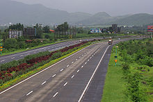
The Mumbai-Pune Expressway was the first expressway to be operational in India on 2002
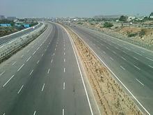
Outer Ring Road (Nehru ORR) at Narsinghi, Hyderabad
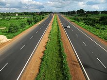
Durgapur Expressway in the Indian state of West Bengal, part of NH 2
| Type of Roads |
Length |
| Expressways |
1,206 KM (749 MI) as of 2011 |
| National Highways |
79,116 KM (49,160 MI) |
| State Highways |
155,716 KM (96,757 MI) |
| District, Rural & Other Road |
4,455,010 KM (2,768,210 MI) |
| Total Length |
4,689,842 KM (2,914,133 MI) Approx. |
Bus
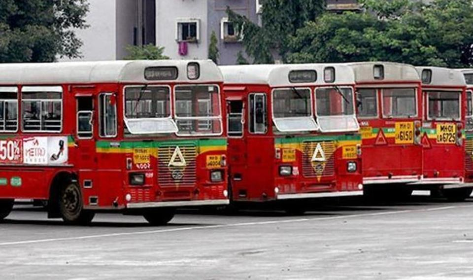
Mumbai's B.E.S.T. is India's oldest operating transport body
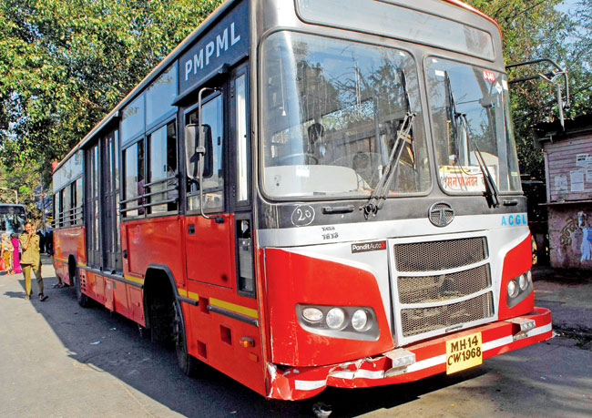
Pune BRTS
Buses are an important means of public transport in India. Due to this social significance, urban bus transport is often owned and operated by public agencies, and most state governments operate bus services through a State Road Transport Corporation. These corporations have proven extremely useful in connecting villages and towns across the country. Alongside the public companies are many private bus fleets: 2012, there were 131,800 publicly owned buses in India, but 1,544,700 buses owned by private companies.
| State |
Bus Fleet of all STU's |
| Karnataka |
23138 |
| Tamil Nadu |
23078 |
| Maharashtra |
16050 |
| Uttar Pradesh |
12194 |
| Andhra Pradesh |
11785 |
| Gujarat |
10850 |
| Telangana |
10476 |
| Kerala |
6240 |
| Delhi |
5578 |
| Rajasthan |
4500 |
| Haryana |
4250 |
| Himachal Pradesh |
2600 |
| Punjab |
2508 |
| West Bengal |
2345 |
| Uttrakhand |
1419 |
| Assam |
585 |
| Chandigarh |
578 |
| Goa |
565 |
| Jammu & Kashmir |
529 |
| Orissa |
462 |
| Bihar |
306 |
| Pondicherry |
141 |
| Sikkim |
126 |
Motor Vehicles
Two-Wheelers
Motorised two-wheeler vehicles like scooters motorcycles and mopeds are very popular mode of transport due to their fuel efficiency and ease of use in congested roads or streets. The number of two-wheelers sold is several times that of cars. There were 47.5 million powered two-wheelers in India in 2003 compared with just 8.6 million cars.
Manufacture of motorcycles in India started when Royal Enfield began assembly in its plant in Chennai in 1948. Royal Enfield, an iconic brand name in the country, manufactures different variants of the British Bullet motorcycle which is a classic motorcycle that is still in production. Hero MotoCorp (formerly Hero Honda), Honda, Bajaj Auto, Yamaha, TVS Motors and Mahindra 2 Wheelers are the largest two-wheeler companies in terms of market-share.
Automobiles
Private automobiles account for 30% of the total transport demand in urban areas of India. An average of 963 new private vehicles are registered every day in Delhi alone. The number of automobiles produced in India rose from 6.3 million in 2002–03 to 11 million (11.2 million) in 2008–09. There is substantial variation among different cities and states in terms of dependence on private cars: Bangalore, Chennai, Delhi and Kolkata have 185, 127, 157 and 40 cars per 1000 people respectively. This reflects different levels of urban density and varied qualities of public transport infrastructure. Nationwide, India still has a very low rate of car ownership. When comparing car ownership between BRIC developing countries, it is on a par with China, and exceeded by Brazil and Russia.
Taxis
Most of the taxicabs in India are either Premier Padmini or Hindustan Ambassador cars. However, with app based taxi services like Uber coming to India as well as homegrown Indian app based taxi services like Ola coming to the fore, taxicabs now include Sedans, SUVs and even motorcycle taxis. Depending on the city/state, taxis can either be hailed or hired from taxi-stands. In cities such as Bangalore, Hyderabad and Ahmedabad, taxis need to be hired over phone, whereas in cities like Kolkata and Mumbai, taxis can be hailed on the street. According to government of India regulations, all taxis are required to have a fare-meter installed. There are additional surcharges for luggage, late-night rides and toll taxes are to be paid by the passenger. Since 2006, radio taxis have become increasingly popular with the public due to reasons of safety and convenience.
Auto
An auto is a three-wheeler vehicle for hire that does not have doors and is generally characterised by a small cabin for the driver in the front and a seat for passengers in the rear. Generally it is painted in yellow, green or black color and has a black, yellow or green canopy on the top, but designs vary considerably from place to place. The color of the autorickshaw is also determined by the fuel that it is powered by, for example Agartala, Ahmedabad, Mumbai and Delhi have green or black autos indicating the use of compressed natural gas, whereas the autos of Kolkata, Bangalore, Hyderabad have green autos indicating the use of LPG.
Rail
Country-wide rail services in India, are provided by the state-run Indian Railways under the supervision of the Ministry of Railways. IR is divided into seventeen zones including the Kolkata Metro Railway. The IR are further sub-divided into sixty seven divisions, each having a divisional headquarters.
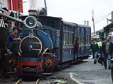
Darjeeling Himalayan Railway in West Bengal is a World Heritage Site, and one of the only few steam locomotive operated railway lines in India
Besides, the IR also operates a number of luxury trains which cater to various tourist circuits. For instance, the Palace on Wheels serves the Rajasthan circuit and The Golden Chariot serves the Karnataka and Goa circuits. There are two UNESCO World Heritage Sites on IR, the Chhatrapati Shivaji Maharaj Terminus and the Mountain railways of India. The latter consists of three separate railway lines located in different parts of India, the Darjeeling Himalayan Railway, a 610 mm (2 ft) narrow gauge railway in Lesser Himalayas in West Bengal, the Nilgiri Mountain Railway, a 1,000 mm (3 ft 3 3⁄8 in) metre gauge rack railway in the Nilgiri Hills in Tamil Nadu and the Kalka-Shimla Railway, a 762 mm (2 ft 6 in) narrow gauge railway in the Siwalik Hills in Himachal Pradesh.
International Links Railway
Rail links between India and neighbouring countries are not well-developed. Two trains operate to Pakistan—the Samjhauta Express between Delhi and Lahore, and the Thar Express between Jodhpur and Karachi. Bangladesh is connected by a biweekly train, the Maitree Express that runs from Kolkata to Dhaka. Two rail links to Nepal exist—passenger services between Jainagar and Bijalpura, and freight services between Raxaul and Birganj.
Indian and Bangladeshi governments will start work late by December or early by January 2015 on a new rail link to ease surface transport. India will build a 15-km railway tracks linking Tripura's capital Agartala with Bangladesh's southeastern city of Akhaura, an important railway junction connected to Chittagong port, resource-rich Sylhet and Dhaka. An agreement to implement the railway project was signed between India and Bangladesh in January 2010. Total cost of the proposed project is estimated at Rs. 252 crore. The Indian Railway Construction Company (IRCON) would lay the new railway tracks on both sides of the border. Of the 15 km rail line, five km of tracks fall in the Indian territory. The NFR is now laying tracks to connect Tripura's southern most border town Sabroom, 135 km south of here. From Sabroom, the Chittagong international sea port is just 72 km.
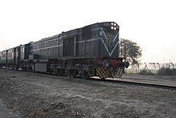
Samjhauta Express between India and Pakistan
Mumbai Suburban
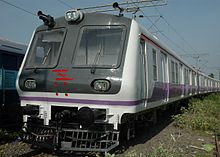
A suburban train in Mumbai
The Mumbai Suburban Railway is the first rail system in India which began services in Mumbai in 1853, transports 6.3 million passengers daily and has the highest passenger density in the world. The Kolkata Suburban Railway, was established in Kolkata in 1854.
The operational suburban rail systems in India are in Mumbai Suburban Railway, Kolkata Suburban Railway, Lucknow-Kanpur Suburban Railway, Chennai Suburban Railway, Delhi Suburban Railway, Pune Suburban Railway, Hyderabad Multi-Modal Transport System, Barabanki-Lucknow Suburban Railway and Karwar railway division.
Other planned systems are Bengaluru Commuter Rail, Ahmedabad Suburban Railway and Coimbatore Suburban Railway.
Chennai Metro
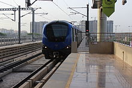
A Metro in Chennai
The first modern rapid transit in India is the Kolkata Metro and its vert modern. The metro started its operations in 1984, this is also the 17th Zone of the IR. The Delhi Metro in New Delhi is India's second conventional metro and began operations in 2002. The Namma Metro in Bangalore is India's third operational rapid transit and began operations in 2011.
The operational systems are Kolkata Metro, Delhi Metro, Namma Metro, Rapid Metro, Mumbai Metro, Jaipur Metro, Chennai Metro, Kochi Metro, Lucknow Metro and Hyderabad Metro.
The planned systems are Noida Metro, Ghaziabad Metro, Navi Mumbai Metro, Nagpur Metro, Metro-Link Express for Gandhinagar and Ahmedabad, Varanasi Metro, Kanpur Metro, Bareilly Metro, Pune Metro, Vijayawada Metro, Patna Metro, Meerut Metro, Guwahati Metro, Chandigarh Metro, Bhopal Metro, Kozhikode Light Metro, Indore Metro, Thiruvananthapuram Light Metro, Agra Metro, Coimbatore Metro, Visakhapatnam Metro, Dehradun Metro, Surat Metro, Srinagar Metro, Greater Gwalior Metro, Jabalpur Metro and Greater Nashik Metro.
Currently, rapid transit are under construction or in planning in several major cities of India and will be opened shortly.
Mumbai Monorail
 A Monorail in Mumbai
A Monorail in Mumbai
Monorail is generally considered as feeder system for the Metro trains in India. The Mumbai Monorail, which started in 2014, is the first operational monorail network in India (excluding the Skybus Metro) since the Patiala State Monorail Trainways closed in 1927.
Other planned systems are Chennai Monorail, Kolkata Monorail, Allahabad Monorail, Bengaluru Monorail, Delhi Monorail, Indore Monorail, Kanpur Monorail, Navi Mumbai Monorail, Patna Monorail, Pune Monorail, Ahmedabad Monorail, Aizawl Monorail, Bhubaneswar Monorail, Jodhpur Monorail, Kota Monorail, Nagpur Monorail and Nashik Monorail.
Kolkata Tram
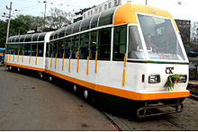
A Tram in Kolkata
In addition to trains, trams were introduced in many cities in late 19th century, though almost all of these were phased out. The trams in Kolkata is currently the only tram system in the country. The Calcutta Tramways Company is in the process of upgrading the existing tramway network at a cost of ₹240 million (US$3.6 million).
Airways
Directorate General of Civil Aviation is the national regulatory body for the aviation industry. It is controlled by the Ministry of Civil Aviation. The ministry also controls aviation related autonomous organisations like the Airports Authority of India (AAI), Bureau of Civil Aviation Security (BCAS), Indira Gandhi Rashtriya Uran Akademi and Public Sector Undertakings including Air India, Pawan Hans Helicopters Limited and Hindustan Aeronautics Limited.
Air India is India's national flag carrier after merging with Indian (airline) in 2011 and plays a major role in connecting India with the rest of the world. IndiGo, Jet Airways, Air India, Spicejet and GoAir are the major carriers in order of their market share. These airlines connect more than 80 cities across India and also operate overseas routes after the liberalisation of Indian aviation. Several other foreign airlines connect Indian cities with other major cities across the globe. However, a large section of country's air transport potential remains untapped, even though the Mumbai-Delhi air corridor was ranked 10th by Amadeus in 2012 among the world's busiest routes
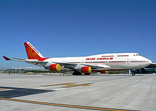
Air India, the flag carrier of India
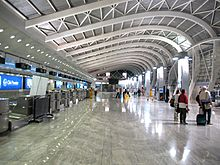
The Departures section of Mumbai Airport.
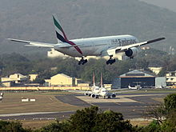
An Emirates 777-200LR lands at Kempegowda International Airport
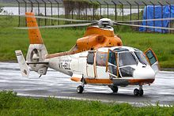
Aerospatiale SA 365N Dauphin 2, Pawan Hans Helicopter
Airports
While there are 346 civilian airfields in India – 253 with paved runways and 93 with unpaved runways, only 132 were classified as "airports" as of November 2014. Of these, Indira Gandhi International Airport in Delhi is the busiest in the country. The operations of the major airports in India have been privatised over the past 5 years and this has resulted in better equipped and cleaner airports. The terminals have either been refurbished or expanded.
India also has 33 "ghost airports," which were built in an effort to make air travel more accessible for those in remote regions but are now non-operational due to a lack of demand. The Jaisalmer Airport in Rajasthan, for example, was completed in 2013 and was expected to host 300,000 passengers a year but has yet to see any commercial flights take off. Despite the number of non-operational airports, India is currently planning on constructing another 200 "low-cost" airports over the next 20 years.
| Length of Runway |
Airports with Paved Runways |
Airports with Unpaved Runways |
| 3,047 M (10,000 ft) or more |
21 |
1 |
| 2,438 to 3,047 M (8,000 to 10,000 ft) |
59 |
3 |
| 1,524 to 2,438 M (5,000 to 8,000 ft) |
76 |
6 |
| 914 to 1,524 M (3,000 to 5,000 ft) |
82 |
38 |
| under 914 M (3,000 ft) |
14 |
45 |
| Total |
253 |
93 |
Helicopter
As of 2013, there are 45 heliports in India. India also has the world's highest helipad at the Siachen Glacier at a height of 6400 m (21,000 ft) above mean sea level.
Pawan Hans Helicopters Limited is a public sector company that provides helicopter services to ONGC to its off-shore locations, and also to various State Governments in India, particularly in North-east India.